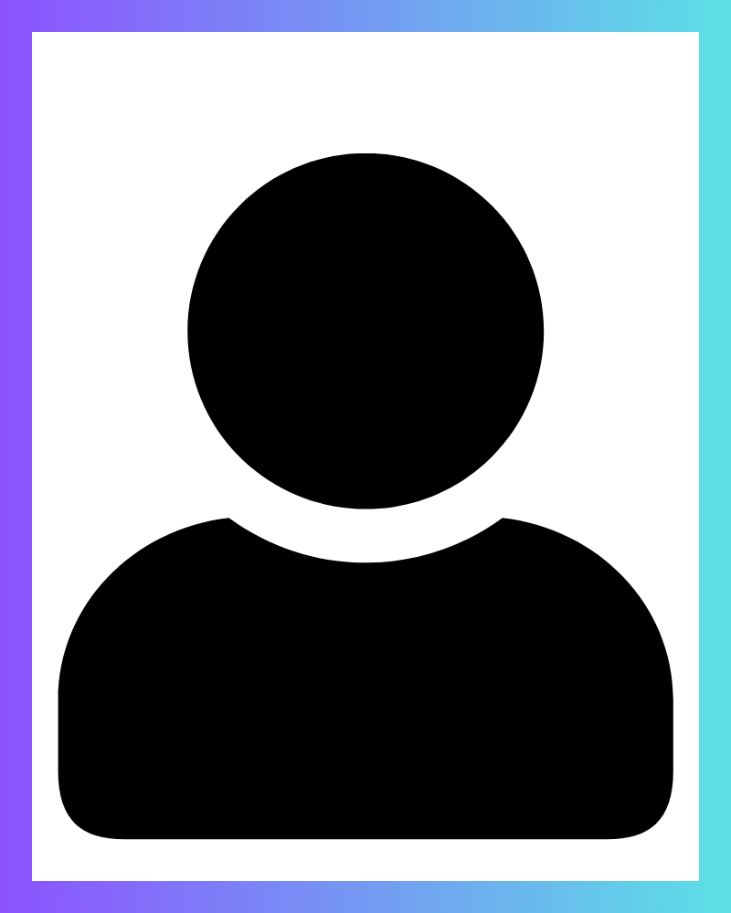

MEMBERS
理事紹介
医療・福祉とAIの現場を知るメンバーが、協会の活動を支えています。

会長
大友 達也OTOMO Tatsuya
医療・福祉分野に長く携わり、現場と経営の双方の視点から協会の活動を牽引。医療AIの健全な普及に向けた方針づくりを担う。

理事・事務局
鈴木 峻平SUZUKI Shunpei
協会の運営全般を統括し、研修・認定プログラムの企画と、医療機関との窓口・調整を担当する。

理事・講師／監修
副田 渓SOEDA Kei
Web・AI領域を専門に、医療現場向けのAI活用・教育コンテンツの開発と研修監修を担当する。